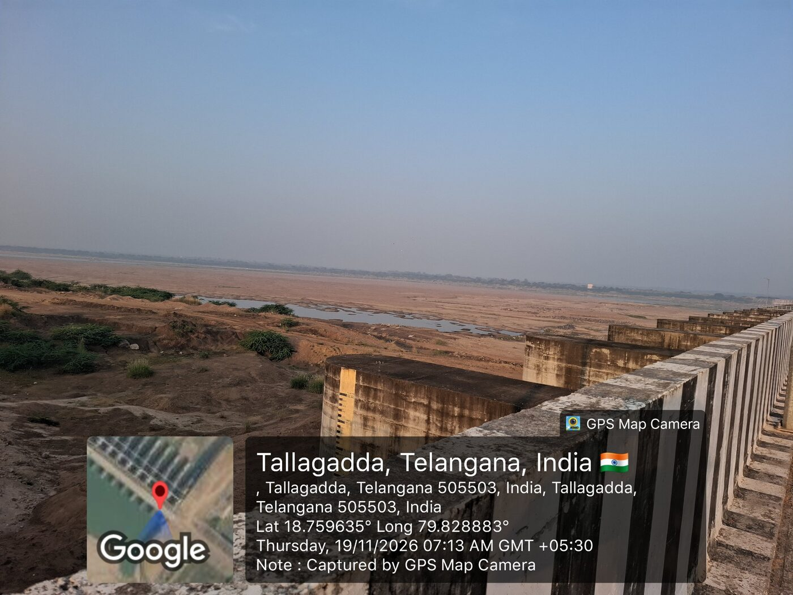
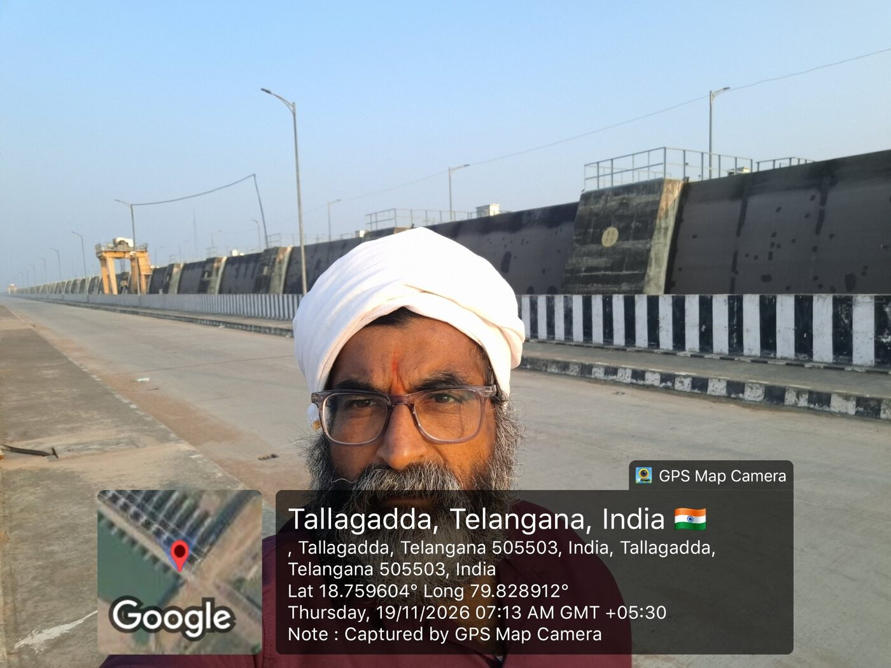
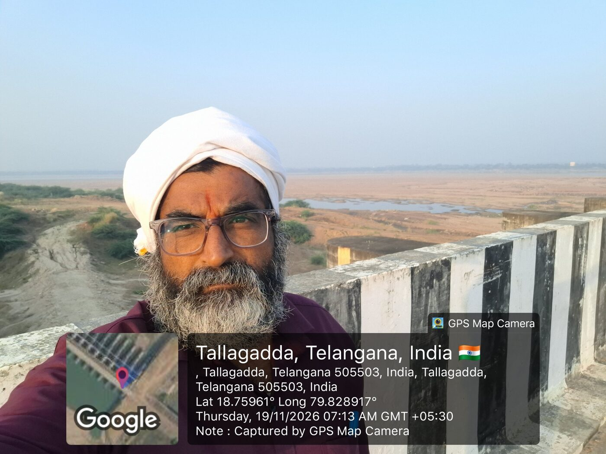

Home › Nearby Temples › Annaram Barrage Near Kaleshwaram
Annaram Barrage Near Kaleshwaram
అన్నారం బ్యారేజ్
📍 Distance from Kaleshwaram temple: 12 km · 🏷️ Type: Barrage / Project
Annaram Barrage is an engineering landmark and a scenic river-front stop on the Kaleshwaram 50 KM circuit, about 12 km from the temple.
It is an easy add-on after Medigadda Barrage. Please check current access rules locally before travelling.
Photos / ఫోటోలు



How to visit
Start from Sri Kaleshwara Mukteshwara Swamy Temple, Kaleshwaram, Bhupalpally district, Telangana 505504. See how to reach Kaleshwaram, temple timings and stay options. You can also add this place to your yatra plan.
What to know before you go
అన్నారం బ్యారేజ్ is an engineering landmark and a scenic river-front stop on the Kaleshwaram 50 KM circuit, about 12 km from the temple. It suits visitors who want a quiet river view after darshan.
Getting there
It is part of the Day 2 route in our two-day pilgrimage and easy to combine with Medigadda Barrage and Kannepalli Pump House.
Good to know
Access rules at project sites can change, so ask locally before travelling. Early morning or late afternoon gives the most pleasant light and weather.
Plan your visit
- Temple darshan timings: 7:00 AM – 1:30 PM and 4:00 PM – 8:00 PM (closed in between) — see temple timings.
- Stay near the temple: where to stay. Packages: yatra packages.
- Distances are approximate — check live directions before you leave.